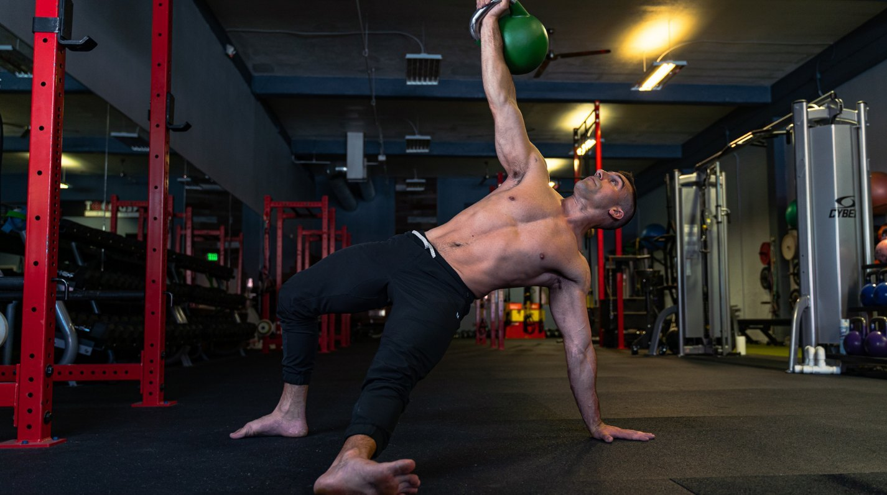

Workout III puts your swing and press together under fatigue. Keep every swing crisp: hike, snap, float. If your readiness score was low this morning, drop one round from each circuit and keep the tempo honest.
| Type | Exercise | Rest | Intensity | Reps | Sets | Tempo |
|---|